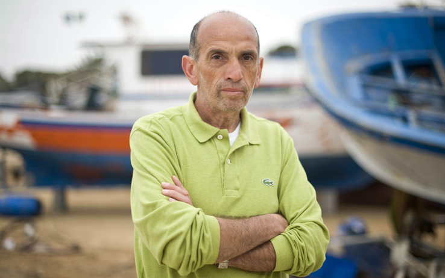

09/03/2016
Giornalista italiano, nato ad Asti il 18 dicembre 1951, è reporter de La Stampa.
E' stato corrispondente da Parigi e inviato di guerra.
Si è interessato fra l'altro degli avvenimenti sorti a partire dal 2010-2011 e noti come "Primavera araba".
Nell'agosto 2011 è stato rapito in Libia e liberato dopo due giorni. Il 9 aprile 2013, mentre si trovava in Siria come inviato di guerra, di lui si perde ogni traccia.
La prima notizia del suo rapimento giunge il 6 giugno quando viene diffusa la notizia che Quirico è ancora vivo.
Viene infine liberato l'8 settembre 2013, dopo 5 mesi di sequestro, grazie ad un intervento dello Stato Italiano e infine riportato a casa.
Nel 2015 ha vinto il Premio letterario Brancati.
Video intervista:
Contatto: domenico.quirico[@]lastampa.it
Altri articoli:
“Io per le strade di Damasco due anni dopo il rapimento”
“Nei luoghi della mia prigionia tutto è in rovina, anche il dolore”
Il racconto di Domenico Quirico “Io, tra bombe, fughe e umiliazioni”
Un giorno da cecchino tra le macerie di Aleppo
“Io per le strade di Damasco due anni dopo il rapimento”
“Nei luoghi della mia prigionia tutto è in rovina, anche il dolore”
Il racconto di Domenico Quirico “Io, tra bombe, fughe e umiliazioni”
Un giorno da cecchino tra le macerie di Aleppo
Pubblicazioni:
Squadrone bianco. Storia delle truppe coloniali italiane, Mondadori, 2003.
Generali. Controstoria dei vertici militari che fecero e disfecero l'Italia, Mondadori, 2007.
Naja. Storia del servizio di leva in Italia, Mondadori, 2008.
Primavera araba. Le rivoluzioni dall'altra parte del mare, Bollati Boringhieri, 2011.
Gli ultimi. La magnifica storia dei vinti, Neri Pozza, 2013.
Il paese del male. 152 giorni in ostaggio in Siria, Neri Pozza, 2013.
Il grande califfato, Neri Pozza, 2015.
Squadrone bianco. Storia delle truppe coloniali italiane, Mondadori, 2003.
Generali. Controstoria dei vertici militari che fecero e disfecero l'Italia, Mondadori, 2007.
Naja. Storia del servizio di leva in Italia, Mondadori, 2008.
Primavera araba. Le rivoluzioni dall'altra parte del mare, Bollati Boringhieri, 2011.
Gli ultimi. La magnifica storia dei vinti, Neri Pozza, 2013.
Il paese del male. 152 giorni in ostaggio in Siria, Neri Pozza, 2013.
Il grande califfato, Neri Pozza, 2015.